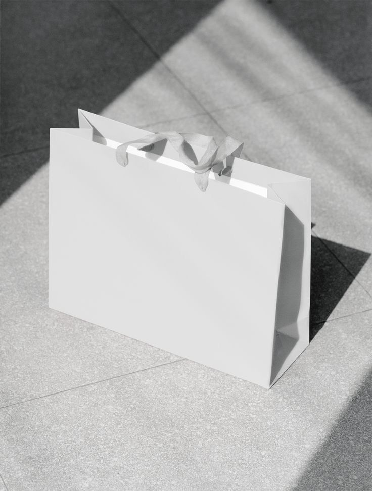

Identidad
Diseño de marca — casosIdentidades visuales construidas junto a cada marca: del concepto al sistema — wordmark, papelería, dirección de arte y aplicaciones. [placeholder — texto final con Kati]

Reducir la marca a su gesto mínimo — una grotesca decidida y el blanco y negro — para que la ropa y la fotografía pongan el resto. [placeholder]
Una identidad orgánica y serena, apoyada en verdes profundos y texturas naturales, que traduce la formulación consciente de la marca en cada superficie. [placeholder]


¿Tu marca necesita una identidad?
CONTACTO Y ENCARGOS →Identidad
Diseño de marca — casosIdentidades visuales construidas junto a cada marca: del concepto al sistema — wordmark, papelería, dirección de arte y aplicaciones. [placeholder — texto final con Kati]
Identidad completa para una marca de indumentaria: wordmark, monograma, dirección de arte en blanco y negro y un sistema de aplicaciones que sostiene la voz de la marca en cada punto de contacto.

 02 — Dirección de arte
02 — Dirección de arte
 03 — Vía pública
03 — Vía pública

04 — Packaging 05 — Redes
05 — Redes
¿Tu marca necesita una identidad?
CONTACTO Y ENCARGOS →
Identidad completa para una marca de indumentaria: wordmark, monograma, dirección de arte en blanco y negro y un sistema de aplicaciones que sostiene la voz de la marca en cada punto de contacto.
Pintura
Obra de taller — pintura, grabado, textil, instalaciónLa práctica se articula en torno a la exploración de la intimidad, la memoria y la ambigüedad como territorios sensibles de percepción. A través de capas, transparencias y materialidades diversas, el trabajo construye superficies de superposición y velamiento donde la imagen aparece en un estado inestable, entre la presencia y la ausencia. Mi obra propone una aproximación atmosférica y afectiva, en la que los rastros, las huellas y las tensiones entre lo visible y lo oculto activan lecturas abiertas y fragmentarias de la experiencia.

Retratos
Pintura a modo de estudio, realizada con veladuras en acrílico. Representa personajes abstraídos de un espacio físico reconocible y atemporal, donde las miradas son protagonistas y construyen la narrativa.

Copa de vino tinta
Aguatinta realizada a modo de estudio, que destaca la individualidad y la soledad en el acto compartido de la celebración, los encuentros y el brindis.

Silla y tela
Estudio de carbonilla en negativo, realizado con goma de caucho sobre papel escenográfico. Tratando una vez más sobre el vacío y la ausencia.


Mujeres
Trabajo textil realizado con vellón y mostacillas. Demanda los espacios y roles laborales, como también la relación histórica entre la costura y las mujeres: un tejido roto, caracterizado con lastimaduras sobre piel abierta. Expuesta en Espacio Barbuda, CABA (2026).


Katharina Armbruster

Artista visual de Zona Sur, Buenos Aires. Finalizando la Licenciatura en Artes Visuales con orientación en pintura (UNA), con formación en dibujo, pintura, cerámica, escultura, grabado y arte impreso. Expuso su obra textil Mujeres en Espacio Barbuda (CABA, 2026) y participó de la Clínica de Obra facilitada por Marina De Caro. Actualmente trabaja freelance en murales, ilustración y venta personalizada.
«Superficies de superposición y velamiento donde la imagen aparece en un estado inestable, entre la presencia y la ausencia.»

Katharina
Armbruster
Artista visual de Zona Sur, Buenos Aires. Finalizando la Licenciatura en Artes Visuales con orientación en pintura (UNA), con formación en dibujo, pintura, cerámica, escultura, grabado y arte impreso. Expuso su obra textil Mujeres en Espacio Barbuda (CABA, 2026) y participó de la Clínica de Obra facilitada por Marina De Caro. Actualmente trabaja freelance en murales, ilustración y venta personalizada.
«Superficies de superposición y velamiento donde la imagen aparece en un estado inestable, entre la presencia y la ausencia.»
Katharina Armbruster
Artista visual de Zona Sur, Buenos Aires. Finalizando la Licenciatura en Artes Visuales con orientación en pintura (UNA), con formación en dibujo, pintura, cerámica, escultura, grabado y arte impreso. Expuso su obra textil Mujeres en Espacio Barbuda (CABA, 2026) y participó de la Clínica de Obra facilitada por Marina De Caro. Actualmente trabaja freelance en murales, ilustración y venta personalizada.
«Superficies de superposición y velamiento donde la imagen aparece en un estado inestable, entre la presencia y la ausencia.»